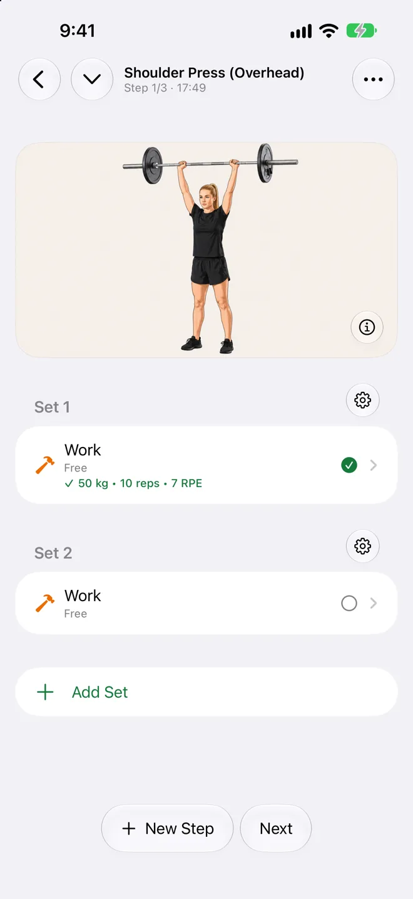
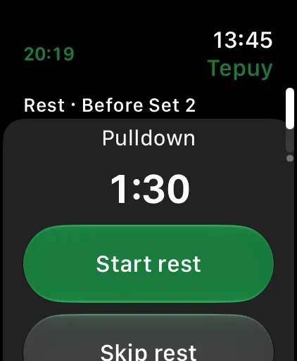

Tepuy press kit
Everything for writing about Tepuy. Use the text and the files without asking, and write to press@hatilu.com for anything that is missing.
Fact sheet
- App
- Tepuy: Workout Tracker & Log
- What it is
- A workout tracker for strength training, Hyrox and any other discipline
- Made by
- Javier Fernandes, Hatilú Studio, the Netherlands
- Platforms
- iPhone, iPad and Apple Watch
- Price
- Free, with no ads. Logging, charts and measurements stay free. AI features will be paid when they arrive.
- First released
- April 2026
- Category
- Health & Fitness
- Languages
- English, Dutch, French, German, Italian, Portuguese and Spanish
- App Store
- apps.apple.com/app/id6759826604
- Website
- hatilu.com/tepuy
- Press contact
- press@hatilu.com
In a sentence
Tepuy is a workout tracker for iPhone, iPad and Apple Watch that is free with no ads, no account and no subscription to log your workouts.
In a paragraph
Tepuy is a workout tracker for iPhone, iPad and Apple Watch, built by one independent developer. Routines, exercises, charts and body measurements are unlimited and free, with no ads and no account to create. Each exercise carries the metrics it needs, so the same app covers strength training, powerlifting, calisthenics, kettlebells, Olympic lifting and Hyrox races. An Apple Watch can run a whole session, and workouts sync through the user’s own iCloud and into Apple Health.
The story
Javier Fernandes has lifted weights since he was a teenager. It is his main hobby, and these days he does it mostly to stay healthy. He is also an experienced Apple developer, and the popular workout trackers frustrated him on both counts: upsells on every screen, free tiers that are not really free, and apps that each cover a single discipline. He set out to build a platform for any discipline instead.
Tepuy is free for two reasons. It costs almost nothing to run. And fitness is expensive enough already: a gym, clothes, perhaps a trainer, equipment, good food. Javier was born and grew up in Venezuela, where healthcare is out of reach for many people and staying fit is how they look after themselves. If a free app helps any of them, he counts that as a win.
Logging is free forever, with no caps and no trial. AI features will be paid when they arrive, because they cost money to run. The commitment is that the free app is never reduced, limited or interrupted to sell them.
Privacy comes from his day job. Javier works in health tech, where protecting people’s data comes first, so Tepuy has no account, no sign-up and no email. Hatilú Studio cannot see anyone’s workouts. The app sends anonymous usage statistics and crash reports, and the privacy policy lists them.
The name
A tepuy is one of the table-top mountains of southern Venezuela. Javier chose the name for the shape: clean, simple, nothing cluttered, which is what the app is meant to be.
Files
The screenshots are unframed captures from the app, at full resolution.
 App iconPNG, 1024 × 1024
App iconPNG, 1024 × 1024 Home screenPNG, 1320 × 2868
Home screenPNG, 1320 × 2868
Workout in progressPNG, 1320 × 2868 Progress chartsPNG, 1320 × 2868
Progress chartsPNG, 1320 × 2868
Apple WatchPNG, 422 × 514